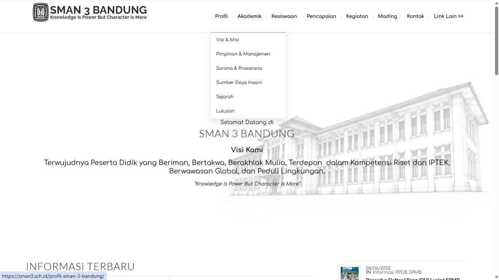
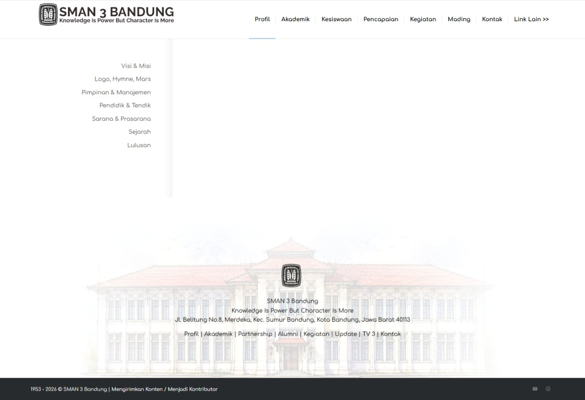

Navigation clarity
Pengguna masih membutuhkan petunjuk yang lebih jelas untuk menemukan beberapa kategori informasi.
UI/UX CASE STUDY · WEBSITE REDESIGN
Redesign pengalaman pengguna website SMAN 3 Bandung dengan fokus pada struktur informasi, navigasi, dan akses menuju konten penting.
Explore Prototype ↗01 — THE CHALLENGE
Website sekolah memuat banyak informasi yang dibutuhkan siswa, orang tua, alumni, dan calon peserta didik. Namun, keberadaan informasi saja belum cukup apabila pengguna kesulitan menemukan lokasi menu yang tepat.
Evaluasi dilakukan untuk mengetahui kemudahan pengguna dalam menemukan informasi pada website.
02 — RESEARCH
Pengujian dilakukan untuk melihat seberapa mudah responden menyelesaikan tugas pencarian informasi.
Task Scenario dan Single Ease Question (SEQ), dilaksanakan pada 30 September 2026. Responden memberikan penilaian setelah menyelesaikan setiap tugas.
03 — KEY FINDINGS
Rata-rata skor keseluruhan mencapai 5.8 dari 7. Seluruh sepuluh tugas memenuhi benchmark 5.5.
Seluruh task memperoleh skor di atas benchmark minimum 5.5.
Pengguna masih membutuhkan petunjuk yang lebih jelas untuk menemukan beberapa kategori informasi.
Informasi penting seperti prestasi dan kontak dapat dibuat lebih menonjol.
Jalur menuju informasi penting perlu dibuat lebih ringkas dan mudah dikenali.
04 — DESIGN DIRECTION
Rekomendasi berikut diterjemahkan menjadi arah perancangan ulang berdasarkan temuan evaluasi.
Mengelompokkan sejarah, visi-misi, tujuan, dan informasi dasar sekolah dalam struktur konsisten.
Menonjolkan tautan menuju prestasi, SPMB, kegiatan, dan kontak sekolah.
Menyediakan akses cepat ke informasi yang sering dicari pengguna.
05 — BEFORE & AFTER
Perbandingan tampilan website SMAN 3 Bandung sebelum dan sesudah proses redesign.

Pada tampilan sebelumnya, pengguna perlu mencari informasi melalui navigasi navbar dan membuka menu terlebih dahulu untuk menemukan halaman yang dibutuhkan.

Setelah redesign, navigasi sidebar ditempatkan di sebelah kiri agar kategori informasi lebih mudah terlihat dan diakses. Tampilan juga dirancang dengan pengelompokan informasi yang lebih terstruktur.
REDESIGN EXPLANATION
Perubahan dilakukan untuk mempermudah pengguna menemukan informasi dan menjelajahi website tanpa harus melalui banyak langkah.
Before: Pengguna harus membuka navbar terlebih dahulu untuk melihat pilihan menu yang tersedia. After: Menu navigasi dipindahkan ke bagian kiri dalam bentuk sidebar sehingga pilihan menu langsung terlihat dan lebih mudah diakses.
Before: Pengguna perlu mencari menu yang sesuai terlebih dahulu sebelum menemukan informasi. After: Akses menuju informasi penting dibuat lebih mudah melalui menu sidebar dan bagian halaman utama.
Before: Informasi masih perlu ditelusuri melalui beberapa bagian navigasi. After: Informasi dikelompokkan berdasarkan kategori seperti profil, akademik, kesiswaan, dan informasi sekolah lainnya.
Before: Pengguna perlu memperhatikan beberapa bagian halaman untuk membedakan informasi. After: Judul, menu, dan konten dibuat lebih terstruktur sehingga lebih mudah dikenali.
Before: Pengguna harus kembali mencari menu ketika ingin berpindah ke bagian informasi lain. After: Sidebar membantu pengguna melihat pilihan navigasi secara konsisten saat menjelajahi halaman.
Before: Halaman utama belum menjadi jalur akses yang ringkas untuk seluruh informasi. After: Halaman utama dirancang agar pengguna lebih mudah mengenali informasi dan bagian website yang ingin dikunjungi.
06 — THE PROTOTYPE
Prototype Figma memperlihatkan rancangan navigasi dan pengelompokan konten website SMAN 3 Bandung.
Jelajahi alur halaman dan interaksi pada prototype.
Open Figma Prototype ↗Membentuk generasi unggul, berkarakter, dan peduli lingkungan.
07 — CONCLUSION
Usability testing menghasilkan skor rata-rata SEQ 5.8 dari 7 pada sepuluh tugas yang diuji. Seluruh sepuluh tugas mencapai benchmark 5.5. Temuan ini menjadi dasar untuk memprioritaskan perbaikan navigasi, hierarki informasi, dan akses cepat menuju konten penting.
Langkah berikutnya adalah melakukan pengujian lanjutan terhadap prototype untuk mengetahui apakah perubahan desain benar-benar meningkatkan kemudahan penggunaan.
← Back to portfolio